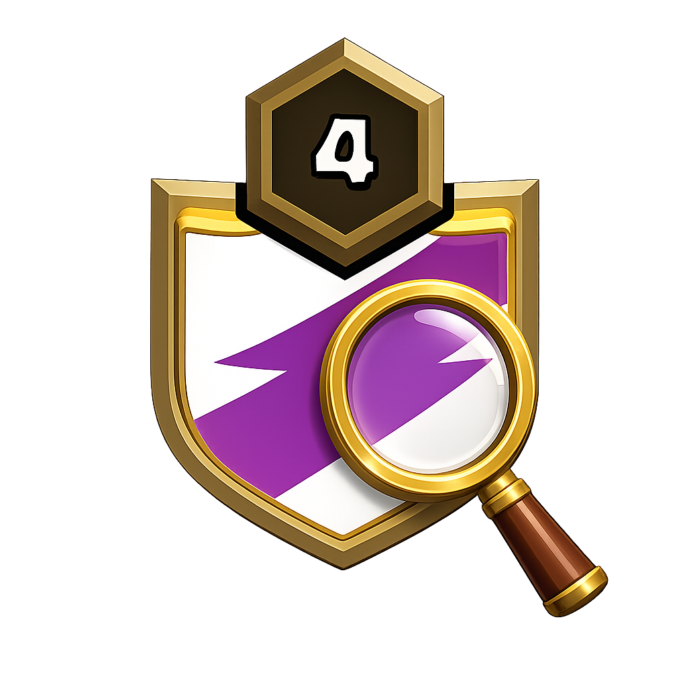
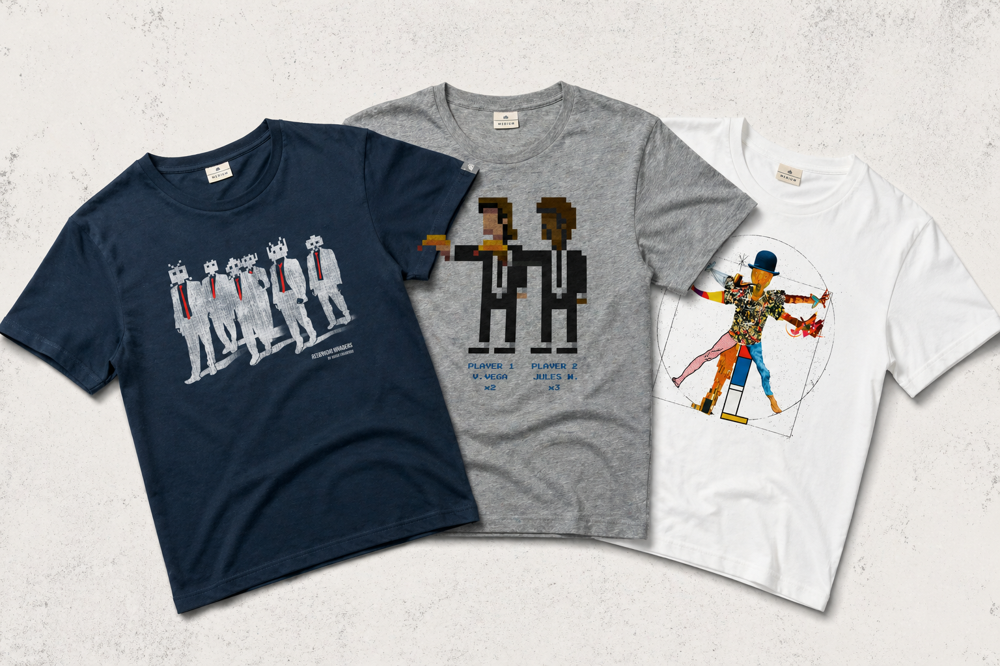

CFGS: Desarrollo de Aplicaciones Multiplataforma
ITB (Institut Tecnològic de Barcelona)
- Kotlin, Java, Android Studio
- POO, PostgreSQL, APIs REST
- JavaScript, Node.js, Express
- Git

Estudiante vocacional de informática con pasión por el software y la ciberseguridad.
Soy un estudiante apasionado por la informática y la programación, con un fuerte interés en el desarrollo de software y la ciberseguridad. Mi enfoque combina la formación académica con un aprendizaje autodidacta.
ITB (Institut Tecnològic de Barcelona)
ITB (Institut Tecnològic de Barcelona) 👑 Matrícula de Honor
Servicios IT en Bologna durante las prácticas internacionales Erasmus+. Mantenimiento de hardware, instalación de infraestructura de red y optimización de scripts en Python.
Videojuego de lucha con el que aprendí programación orientada a objetos. Apliqué herencia, polimorfismo y máquinas de estado para la creación de personajes. Simulamos un entorno de trabajo en equipo real, donde habia un artista, diseñador y un programador (yo).

App Android para explorar el universo de Clash of Clans usando la API oficial de Supercell. Permite buscar clanes, analizar estadísticas detalladas, consultar miembros y gestionar favoritos con persistencia local. Implementada con Clean Architecture (MVVM) y soporte de modo oscuro adaptativo.

Simulación de tienda online de camisetas fullstack con carrito de compra y tramitación de pedidos. El backend expone una API REST con Express que gestiona catálogo, filtros avanzados y comandas con validaciones estrictas. El frontend consume los endpoints con fetch nativo.

Mi primer proyecto publicado. Dos semanas, una JAM y más de 500 competidores. Acabé en el puesto #53, aprendiendo que la gestión del tiempo y tomar decisiones rápidas bajo presión son tan importantes como el código.
XVIII CodeJam (2º Puesto): Concurso de programación en Institut Sabadell.
24 Hores d'Innovació (Ganadores): Reto Biosfer Teslab, prototipado de app médica en Figma.
HP CodeWars Barcelona: Competición de programación utilizando Python.
En mi tiempo libre disfruto aprendiendo e investigando, con tecnologias y conocimientos como las siguientes: